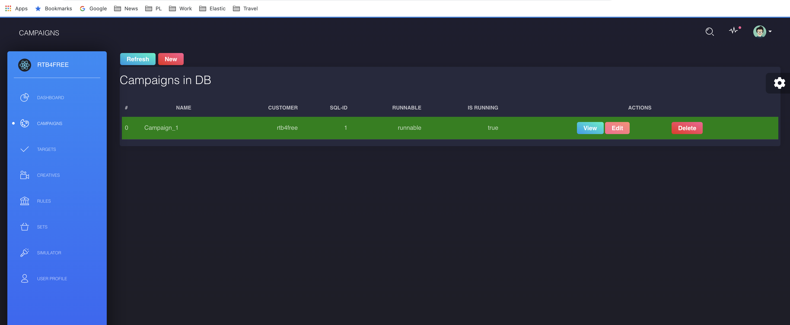
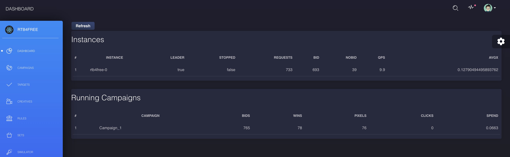
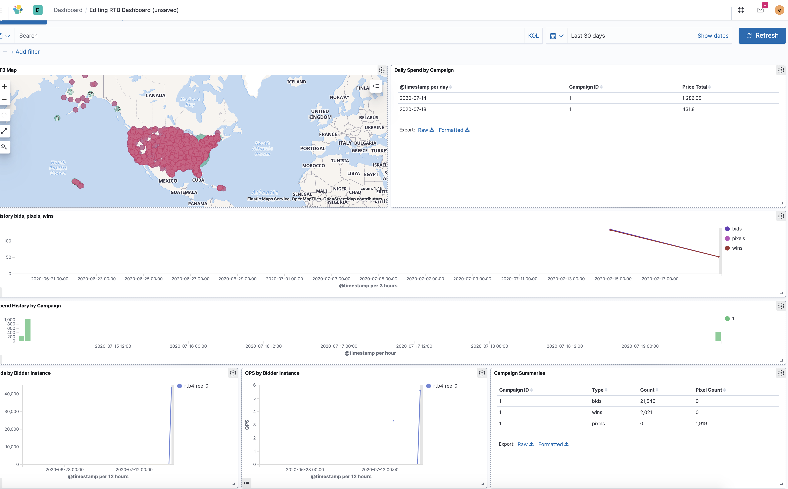

Deployments¶
Docker-Compose¶
Kubernetes¶
This simple quickstart deployment will start the RTB4FREE stack on a single k8s node. It will start the following containers:
- One RTB4FREE bidder.
- One postgresql database server. Contains campaign configuration information used by the bidder.
- One zookeeper instance. Used by kafka.
- One kafka instance. Data from the bidder is published to Kafka, and is read by logstash.
- One Elasticsearch node. Contains bidder logs on campaign activity such as requests, bids, wins, etc.
- One Kibana node. User interface application for Elasticsearch.
- One Logstash instance. Reads data published to Kafka from the bidder, transforms data, then indexes into Elasticsearch.
This configuration was developed on a multipass virtual machine and a k3s kubernetes single node cluster. The setup instructions for this configuration is described here
Start the quickstart deployment with the following kubectl commands.
- Start Postgres.
kubectl apply -f postgres-pod.yml - Start Kafka and Zookeeper.
kubectl apply -f kafka-pod.yml - Get ECK from Elastic
kubectl apply -f https://download.elastic.co/downloads/eck/1.1.2/all-in-one.yaml - Start Elasticsearch and Kibana
kubectl apply -f quickstart/eck_quickstart.yml kubectl apply -f quickstart/eck_kibana_quickstart.yml - Get user "elastic", pwd for kibana login
kubectl get secret quickstart-es-elastic-user -o=jsonpath='{.data.elastic}' | base64 --decode; echo - Port forward kibana port
kubectl port-forward service/quickstart-kb-http 5601 & - Log in to Kibana and confirm Elasticsearch is up and active.
- Open a browser to https://localhost:5601
- Note: https!
- You may need to allow your browser to access https from localhost
- Log in with user "elastic" and password from previous step.
-
Start Logstash.
kubectl apply -f quickstart/logstash_quickstart.yml- At this point, Logstash should have connected to Elasticsearch. Logstash will load index templates used by the bidder. Logstash should now also be connected to Kafka and listening for bidder topics.
-
Start the bidder and open the ports used.
kubectl apply -f quickstart/rtb_quickstart.yml kubectl port-forward service/rtb-bidder-service 8155 & kubectl port-forward service/rtb-bidder-service 7379 & kubectl port-forward service/rtb-bidder-service 8080 & - Connectivity from the bidder to Kafka to Logstash to Elasticsearch should now be established. .
- Go to the Kibana, Dev Tools. List indices with command:
GET _cat/indices?s=i - You should now see indices for rtblogs-
and status- . - You can define campaigns in the bidder's Campaign Manger.
- Open a browser to http://localhost:8155.
- Select Campaign Manager and log in to defined campaigns.
- Load the Elasticsearch Data Transform jobs that calculate campaign summaries and budgets.
- Go to the Kibana, Dev Tools
- To load data transform jobs for campaign summaries,
- copy these API commands to the development console
- Execute.
- To load data transform jobs for budget summaries,
- copy these API commands to the development console
- Execute.
- Go to the Kibana, Stack Management, Elasticsearch - Transforms. You should see the 6 transform jobs.
- Start all the Transform jobs.
- Load the Kibana objects.
- Go to the Kibana, Stack Management, Kibana - Saved Objects.
- Choose Import, and load the saved objects file for bidder. This loads the index patterns, visualizations and dashboards
The RTB4FREE stack should be up and running, and able to process bid requests. Requests, bids, pixels and wins are logged into Elasticsearch. Results will be viewable on the Campaign Manager Dashboard and in the Kibana Dashboards.
Start Demo Campaigns¶
- Load the demo postgres database.
- Copy to demo postgres database into your postgres pod.
kubectl cp ./postgres_db/rtb_postgres.dump postgres:rtb_postgres.dump - Import the demo configuration.
kubectl exec -it postgres /bin/bash psql -U postgres postgres < rtb_postgres.dump exit
- Copy to demo postgres database into your postgres pod.
- View/Edit the campaign in bidder's Campaign Manger.
- Open a browser to http://localhost:8155
- Log in with credentials
- Org: rtb4free
- User: ben.faul@rtb4free.com
- Password: zulu
- Server: localhost:7379
- You can view the demo Campaign, Creative and Target definitions.
- Selecting Campaigns should show the active campaign in running mode. 
- Generate sample requests to show bidder operation.
- Start simulator with command:
kubectl apply -f simulator.yml - After the bidder starts processing bids, you should see results in the Campaign Manger and Elasticsearch.
- Select the Dashboard. You should see active campaign with stats. 
- In Kibana, the RTB Dashboard should show activity. 
- On Elasticsearch, the following indices with campaign data will be generated.
- budget_daily
- budget_hourly
- budget_total
- pixels-yyyy.mm.dd
- requests-yyyy.mm.dd
- rtblogs-yyyy.mm.dd
- status-yyyy.mm.dd
- wins-<yyyy.mm.dd
- xform-bids
- xform-pixels
- xform-wins
Cluster deployment¶
The quickstart deployment will start the RTB4FREE stack on a single k8s node. It will start the following containers:
- Three RTB4FREE bidders.
- One postgresql database server.
- One zookeeper instance.
- One kafka instance.
- Three node Elasticsearch cluster.
- Two Kibana nodes.
- Three Logstash instances.
This configuration was developed on 3 multipass virtual machines as a 3 node k3s kubernetes cluster. The setup instructions for this configuration is described here
Start the cluster deployment with the following kubectl commands.
- Start Postgres.
kubectl apply -f postgres-pod.yml - Start Kafka and Zookeeper.
kubectl apply -f kafka-pod.yml - Get ECK from Elastic
kubectl apply -f https://download.elastic.co/downloads/eck/1.1.2/all-in-one.yaml - Create local Persistent Volumes for Elasticsearch data on nodes 1, 2 and 3
multipass shell node1 sudo mkdir /esdata_eck exit - Start Elasticsearch and Kibana
kubectl apply -f cluster/eck_cluster.yml kubectl apply -f cluster/eck_kibana_cluster.yml - Get user "elastic", pwd for kibana login
kubectl get secret es-cluster-es-elastic-user -o=jsonpath='{.data.elastic}' | base64 --decode; echo - Port forward kibana port
kubectl port-forward service/kb-cluster-kb-http 5601 & - Log in to Kibana and confirm Elasticsearch is up and active.
- Open a browser to https://localhost:5601
- Note: https!
- You may need to allow your browser to access https from localhost
- Log in with user "elastic" and password from previous step.
-
Start Logstash.
kubectl apply -f cluster/logstash_cluster.yml- At this point, Logstash should have connected to Elasticsearch. Logstash will load index templates used by the bidder. Logstash should now also be connected to Kafka and listening for bidder topics.
-
Start the bidder and open the ports used.
kubectl apply -f cluster/rtb_cluster.yml kubectl port-forward service/rtb-bidder-service 8155 & kubectl port-forward service/rtb-bidder-service 7379 & kubectl port-forward service/rtb-bidder-service 8080 & - Connectivity from the bidder to Kafka to Logstash to Elasticsearch should now be established. .
- Go to the Kibana, Dev Tools. List indices with command:
GET _cat/indices?s=i - You should now see indices for rtblogs-
and status- . - You can define campaigns in the bidder's Campaign Manger.
- Open a browser to http://localhost:8155.
- Select Campaign Manager and log in to defined campaigns.
- Load the Elasticsearch Data Transform jobs that calculate campaign summaries and budgets.
- Go to the Kibana, Dev Tools
- To load data transform jobs for campaign summaries,
- copy these API commands to the development console
- Execute.
- To load data transform jobs for budget summaries,
- copy these API commands to the development console
- Execute.
- Go to the Kibana, Stack Management, Elasticsearch - Transforms. You should see the 6 transform jobs.
- Start all the Transform jobs.
- Load the Kibana objects.
- Go to the Kibana, Stack Management, Kibana - Saved Objects.
- Choose Import, and load the saved objects file for bidder. This loads the index patterns, visualizations and dashboards
The RTB4FREE stack should be up and running, and able to process bid requests. Requests, bids, pixels and wins are logged into Elasticsearch. Results will be viewable on the Campaign Manager Dashboard and in the Kibana Dashboards.